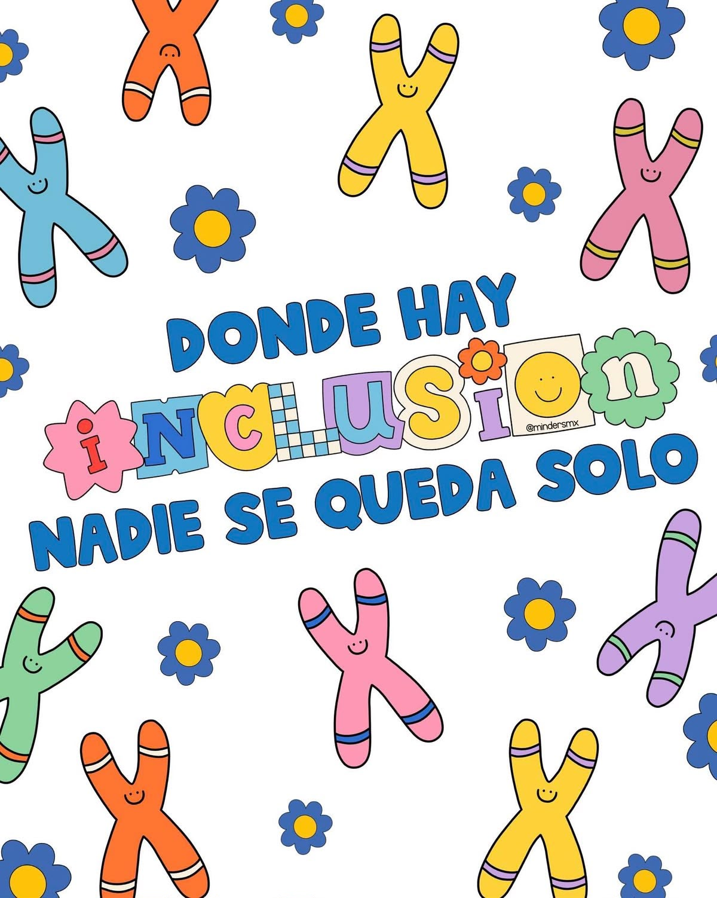

Un lugar donde cada persona puede aprender y crecer
En NeuroMentes promovemos una educación inclusiva, respetuosa
y personalizada, con oportunidades para fortalecer el aprendizaje
y el desarrollo integral de cada niña y niño.
NeuroMentes brinda acompañamiento y asesoramiento educativo inclusivo
a niñas y niños con o sin discapacidad que presentan dificultades
de aprendizaje o requieren apoyos educativos específicos. Trabajamos
con estudiantes que pueden presentar dislexia, disgrafía, discalculia,
trastorno del espectro autista (TEA), trastorno por déficit de atención
e hiperactividad (TDAH), discapacidad intelectual, dificultades de
comunicación y lenguaje, discapacidad auditiva, discapacidad visual
u otras necesidades de apoyo.
Mediante estrategias personalizadas, buscamos favorecer el aprendizaje
y el desarrollo académico, comunicativo, cognitivo y personal,
respetando las características y los ritmos individuales.
NUESTRA IDENTIDAD
NEUROMENTES
🎯
Misión
Brindar acompañamiento y asesoramiento educativo inclusivo
a niñas y niños con o sin discapacidad, mediante estrategias
personalizadas que favorezcan el desarrollo y fortalecimiento
de los dispositivos básicos del aprendizaje, respetando sus
necesidades, habilidades y ritmos de aprendizaje, para impulsar
su autonomía, bienestar y desarrollo integral.
🌟
Visión
Ser un centro de estimulación cognitiva inclusivo, reconocido
por ofrecer atención humana, profesional e innovadora, que
promueva la igualdad de oportunidades, la eliminación de barreras
para el aprendizaje y la participación plena de cada niña y niño
en su entorno educativo y social.
Nuestros valores
🤝
Inclusión
Reconocemos y respetamos la diversidad, promoviendo oportunidades
para aprender y participar.
💚
Respeto
Valoramos la dignidad, las diferencias individuales y los ritmos
de aprendizaje.
❤️
Empatía
Comprendemos las necesidades de cada niña, niño y familia,
brindando atención humana.
💪
Compromiso
Trabajamos con responsabilidad y dedicación para favorecer
el aprendizaje y el desarrollo integral.
⚖️
Equidad
Procuramos que cada estudiante cuente con los apoyos y las
oportunidades que necesita.
📘
Profesionalismo
Promovemos estrategias educativas fundamentadas y la mejora
continua de nuestra atención.
🫱🏻🫲🏼
Colaboración
Fomentamos el trabajo conjunto entre estudiantes, familias,
docentes y especialistas.
🌱
Paciencia
Respetamos los procesos individuales y reconocemos cada avance
en el aprendizaje.

LO QUE OFRECEMOS
Nuestros servicios
Ofrecemos acompañamiento educativo y actividades de estimulación
orientadas a fortalecer las habilidades de aprendizaje de cada
estudiante.
📚
Regularización académica
Reforzamos los contenidos escolares, resolvemos dudas y trabajamos
en las áreas académicas que requieren mayor apoyo.
🧠
Estimulación cognitiva
Actividades orientadas a fortalecer las habilidades cognitivas,
comunicativas y motrices mediante propuestas acordes con las
necesidades de cada estudiante.
Descubre qué servicios ofrecemos y cómo buscamos apoyar
el aprendizaje y desarrollo de cada niño.
Reproduce el video para conocer más sobre nuestros servicios.
NUESTRA ATENCIÓN EDUCATIVA
Nivel educativo que atendemos
En NeuroMentes acompañamos a estudiantes de nivel básico, adaptando
las actividades y estrategias a sus necesidades de aprendizaje
y a su etapa escolar.
🎨
Nivel básico
Preescolar (kínder) y primaria
Acompañamiento dirigido a niñas y niños que cursan preescolar
o primaria. Se busca fortalecer las bases del aprendizaje,
desarrollar habilidades fundamentales y reforzar los contenidos
escolares de acuerdo con su grado y necesidades.
La regularización académica es un acompañamiento educativo
personalizado que refuerza y consolida los contenidos escolares.
Mediante explicaciones claras, ejercicios prácticos, estrategias
y adaptaciones diseñadas para mejorar el aprendizaje, facilitamos
la comprensión de los temas y fortalecemos aquellos aprendizajes
que requieren mayor apoyo.
✏️
Refuerzo escolar
Repaso y práctica de los contenidos escolares para favorecer
la comprensión y consolidación de los aprendizajes.
📒
Hábitos de estudio
Actividades que favorecen la organización, la atención a las
tareas y el desarrollo de estrategias para estudiar.
🌟
Atención personalizada
Apoyo de acuerdo con el grado escolar, las dificultades
identificadas y el ritmo de aprendizaje de cada estudiante.
SERVICIO 2
Estimulación cognitiva
Es un conjunto de técnicas y actividades diseñadas para potenciar
funciones cerebrales como la atención, la memoria, el lenguaje,
el razonamiento y la planificación, entre otros procesos básicos,
aprovechando la neuroplasticidad del cerebro durante la infancia.
🧠
Área cognitiva
Se enfoca en fortalecer procesos como la atención, la memoria,
la percepción, el razonamiento, la comprensión y la resolución
de problemas. Mediante juegos y actividades estructuradas,
se busca favorecer la adquisición de conocimientos y el desarrollo
de estrategias que apoyen el aprendizaje.
💬
Área de comunicación
Se orienta a favorecer las habilidades para expresar necesidades,
ideas y emociones, así como comprender mensajes e interactuar
con otras personas. Las actividades pueden incluir vocabulario,
comprensión de instrucciones, expresión oral y otras formas
de comunicación, de acuerdo con las características de cada
estudiante.
Dificultades que se pueden abordar:
Dificultades del habla.
Dificultades del lenguaje.
Dificultades en la comunicación receptiva y expresiva.
🤸
Área motriz
Busca favorecer la coordinación y el control del movimiento
mediante actividades acordes con la etapa de desarrollo.
Puede incluir habilidades de motricidad fina, como manipular
objetos y utilizar materiales escolares, y de motricidad gruesa,
como el equilibrio, la coordinación general y la orientación
corporal.
Las actividades de estimulación se adaptan a las necesidades
individuales. Cuando se requiere atención especializada, se recomienda
la valoración y el acompañamiento del profesional correspondiente.
CADA NIÑO ES ÚNICO
AUDIO INFORMACIÓN
Cada niño tiene su propio ritmo, intereses, habilidades y forma
de aprender. Comprender estas diferencias nos ayuda a reconocer
sus necesidades y ofrecer experiencias educativas respetuosas
de su proceso individual.
Conoce por qué es importante respetar las distintas formas
de aprender.
NUESTRO PROPÓSITO
¿Qué buscamos fortalecer?
📚
Aprendizaje escolar
Reforzar conocimientos y habilidades necesarios para las
actividades académicas.
💬
Comunicación
Favorecer la comprensión y expresión de ideas, necesidades
y mensajes.
🧩
Retención de información
Practicar estrategias que apoyen la memoria y la recuperación
de información.
🌎
Comprensión del entorno
Promover la observación, la comprensión de situaciones y
la interacción cotidiana.
💡
Organización y solución de problemas
Desarrollar estrategias para organizar actividades y afrontar
retos cotidianos.
🌱
Adquisición de conocimientos
Favorecer nuevas experiencias de aprendizaje de acuerdo con
cada estudiante.
UN ESPACIO PARA APRENDER Y CRECER
¿Por qué inscribir a tu hijo en NEUROMENTES?
Cada niño aprende de forma diferente porque su desarrollo cerebral,
sus procesos cognitivos, su entorno y sus emociones
interactúan de manera única e irrepetible,
y eso los hace únicos..
Conoce nuestra propuesta y descubre cómo podemos orientarte.
Para conocer las necesidades de cada alumno y brindar una atención
personalizada, se solicita la siguiente documentación, según
corresponda.
🧒
Documentación del alumno
Diagnóstico o informe de especialistas, si aplica.
Certificado de discapacidad, si cuenta con él.
CURP del alumno.
Fotografías tamaño infantil.
Certificado médico.
👨👩👧
Documentos del padre, madre o tutor
Identificación oficial vigente.
CURP del padre, madre o tutor.
📚
Documentación escolar
Boletas de calificaciones.
Historial académico.
Reportes de conducta o desempeño escolar.
Información proporcionada por docentes titulares.
Evidencias de trabajos del alumno.
Si algún documento no está disponible, contáctanos para recibir
orientación sobre los pasos a seguir.
COSTOS TRANSPARENTES
Tarifas y servicios
Conoce nuestras tarifas y las opciones de atención que ofrecemos
para acompañar el aprendizaje de cada alumno.
📌
Pago semanal
$450 MXN
¡Promoción por un mes! 30% de descuento, queda en $315.
El pago se realiza de manera semanal, no por sesión..
📄
Informe académico
$100 MXN
Elaboración de informe académico.
📚
Citas
¡Gratuitas!
Las citas son totalmente gratuitas.
PASO A PASO
Proceso de atención
Nuestro proceso busca conocer a cada alumno, identificar sus
necesidades y orientar la atención educativa de acuerdo con
sus características.
🤝
1. Cita inicial
Se agenda una cita para conocer al alumno, identificar sus
necesidades académicas y obtener información relevante sobre
su desarrollo y aprendizaje.
📋
2. Revisión del diagnóstico
Si el alumno cuenta con un diagnóstico previo, se revisará
para conocer sus necesidades específicas y orientar adecuadamente
el proceso de atención.
🧠
3. Evaluación diagnóstica
En caso de que el alumno no cuente con un diagnóstico previo,
se realizará una evaluación educativa para identificar
sus fortalezas, áreas de oportunidad y necesidades de apoyo.
✨
Nuestro objetivo
Brindar una atención personalizada, adaptada a las necesidades
de cada alumno, favoreciendo su aprendizaje y desarrollo académico.
CONECTA CON NOSOTROS
Redes sociales y contacto
¿Tienes dudas o deseas conocer más sobre NeuroMentes?
¡Estamos para orientarte!